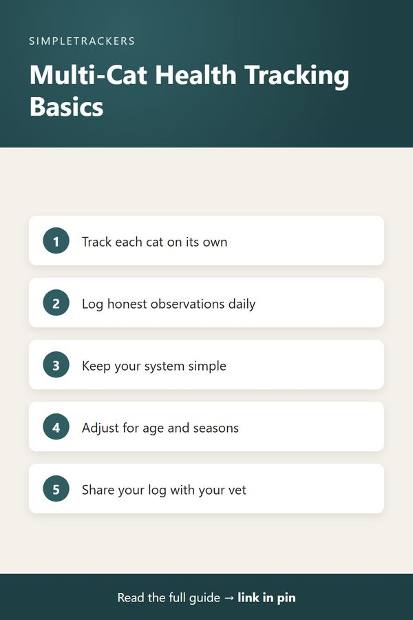

<!doctype html>
<html lang="en">
<head>
<script async src="https://pagead2.googlesyndication.com/pagead/js/adsbygoogle.js?client=ca-pub-7383810158576704" crossorigin="anonymous"></script>
<meta charset="utf-8">
<title>The Complete Guide to Multi-Cat Household Health Tracking</title>
<meta name="viewport" content="width=device-width, initial-scale=1">
<meta name="description" content="The complete guide to tracking health in a multi-cat household: what to log for each cat, how to spot changes early, and how to share data with your vet.">
<link rel="canonical" href="https://ghengoy.github.io/multi-cat-tracker/pillar-guide.html">
<meta property="og:type" content="article">
<meta property="og:title" content="The Complete Guide to Multi-Cat Household Health Tracking">
<meta property="og:description" content="The complete guide to tracking health in a multi-cat household: what to log for each cat, how to spot changes early, and how to share data with your vet.">
<meta property="og:url" content="https://ghengoy.github.io/multi-cat-tracker/pillar-guide.html">
<meta property="og:image" content="https://ghengoy.github.io/multi-cat-tracker/images/hero/pillar-guide.jpg">
<meta name="p:domain_verify" content="ed2ca7fb71cecfffeba5d895002ee1d1"/>
<script data-goatcounter="https://ghengoy.goatcounter.com/count" async src="//gc.zgo.at/count.js"></script>
<style>
  :root { --accent: #2F5D62; --accent-dark: #1E3F43; --tint: #EAF2F1; --ink: #1f2328; --muted: #5d6470;
          --line: #e4e1da; --paper: #fbfaf7; --card: #ffffff; }
  * { box-sizing: border-box; }
  body { margin: 0; background: var(--paper); color: var(--ink); font-family: -apple-system, BlinkMacSystemFont, "Segoe UI", Roboto, "Helvetica Neue", Arial, sans-serif;
         font-size: 18px; line-height: 1.75; -webkit-font-smoothing: antialiased; }
  a { color: var(--accent); text-underline-offset: 3px; }
  a:hover { color: var(--accent-dark); }
  img { max-width: 100%; height: auto; }
  .site-header { background: var(--card); border-bottom: 1px solid var(--line); }
  .site-header .inner { max-width: 760px; margin: 0 auto; padding: 14px 20px; display: flex; align-items: center; justify-content: space-between; gap: 16px; flex-wrap: wrap; }
  .brand { font-weight: 700; color: var(--ink); text-decoration: none; font-size: 17px; display: flex; align-items: center; gap: 10px; }
  .brand-mark { width: 28px; height: 28px; border-radius: 8px; background: var(--accent); display: inline-block; position: relative; }
  .brand-mark::after { content: ""; position: absolute; left: 7px; top: 8px; width: 14px; height: 3px; background: #fff; border-radius: 2px;
                       box-shadow: 0 5px 0 #fff, 0 10px 0 rgba(255,255,255,.6); }
  .site-header nav { display: flex; gap: 18px; font-size: 15px; }
  .site-header nav a { color: var(--muted); text-decoration: none; }
  .site-header nav a:hover { color: var(--accent); }
  main { max-width: 760px; margin: 0 auto; padding: 32px 20px 56px; }
  article > h1, main > h1 { font-size: clamp(30px, 5vw, 42px); line-height: 1.2; letter-spacing: -0.02em; margin: 8px 0 12px; }
  h2 { font-size: 27px; line-height: 1.3; letter-spacing: -0.01em; margin: 52px 0 14px; padding-top: 6px; scroll-margin-top: 16px; }
  h3 { font-size: 21px; line-height: 1.35; margin: 32px 0 8px; }
  p { margin: 0 0 20px; }
  ul, ol { padding-left: 1.3em; margin: 0 0 22px; }
  li { margin-bottom: 8px; }
  li::marker { color: var(--accent); }
  strong { font-weight: 650; }
  .pillar-link { font-size: 15px; margin: 0 0 4px; }
  .pillar-link a { text-decoration: none; }
  .post-meta { color: var(--muted); font-size: 15px; margin: 0 0 24px; }
  .post-hero { margin: 0 0 28px; }
  .post-hero img { width: 100%; aspect-ratio: 16 / 9; object-fit: cover; border-radius: 14px; display: block; background: var(--tint); }
  figcaption { font-size: 13px; color: var(--muted); margin-top: 8px; line-height: 1.5; }
  figcaption a { color: var(--muted); }
  .toc { background: var(--card); border: 1px solid var(--line); border-radius: 12px; padding: 18px 22px 8px; margin: 0 0 32px; font-size: 16px; }
  .toc-title { font-weight: 700; margin: 0 0 8px; font-size: 14px; letter-spacing: .06em; text-transform: uppercase; color: var(--muted); }
  .toc ol { margin: 0 0 10px; }
  .toc li { margin-bottom: 4px; }
  .toc a { text-decoration: none; }
  .key-takeaways, .callout { border-radius: 12px; padding: 20px 24px 6px; margin: 0 0 30px; }
  .key-takeaways { background: var(--tint); border-left: 5px solid var(--accent); }
  .key-takeaways ul { margin-bottom: 14px; }
  .box-title { font-weight: 700; margin: 0 0 8px; font-size: 14px; letter-spacing: .06em; text-transform: uppercase; color: var(--accent-dark); }
  .callout { background: var(--card); border: 1px solid var(--line); border-left: 5px solid var(--accent); }
  .callout.note { border-left-color: #b7791f; }
  .callout.note .box-title { color: #8a5a12; }
  .steps { list-style: none; counter-reset: step; padding-left: 0; }
  .steps > li { counter-increment: step; position: relative; padding-left: 52px; margin-bottom: 18px; }
  .steps > li::before { content: counter(step); position: absolute; left: 0; top: 0; width: 34px; height: 34px; border-radius: 50%;
                        background: var(--accent); color: #fff; font-weight: 700; font-size: 16px; display: flex; align-items: center; justify-content: center; }
  .table-wrap { overflow-x: auto; margin: 0 0 28px; border: 1px solid var(--line); border-radius: 12px; background: var(--card); }
  table { border-collapse: collapse; width: 100%; font-size: 16px; line-height: 1.5; }
  th, td { text-align: left; padding: 12px 16px; border-bottom: 1px solid var(--line); vertical-align: top; }
  th { background: var(--tint); color: var(--accent-dark); font-weight: 700; }
  tr:last-child td { border-bottom: 0; }
  .pin-figure { margin: 36px auto; max-width: 400px; text-align: center; }
  .pin-figure img { border-radius: 12px; box-shadow: 0 10px 30px rgba(0,0,0,.12); display: block; }
  blockquote { margin: 0 0 24px; padding: 4px 0 4px 20px; border-left: 3px solid var(--line); color: var(--muted); font-style: italic; }
  .post-cta { display: flex; gap: 24px; align-items: center; background: var(--card); border: 1px solid var(--line); border-top: 5px solid var(--accent);
              border-radius: 14px; padding: 24px; margin: 48px 0 8px; }
  .post-cta img { width: 150px; border-radius: 10px; flex-shrink: 0; }
  .post-cta h3 { margin: 2px 0 6px; }
  .post-cta p { margin-bottom: 12px; font-size: 16px; }
  .cta-kicker { font-size: 13px !important; letter-spacing: .06em; text-transform: uppercase; color: var(--muted); margin: 0 !important; }
  .buy-button { display: inline-block; background: var(--accent); color: #fff !important; padding: 12px 22px; border-radius: 10px; text-decoration: none; font-weight: 700; font-size: 16px; }
  .buy-button:hover { background: var(--accent-dark); }
  .product-box { background: var(--card); border: 1px solid var(--line); border-radius: 14px; padding: 24px; margin: 24px 0 36px; display: grid; grid-template-columns: 200px 1fr; gap: 0 24px; align-items: center; }
  .product-box img { width: 200px; border-radius: 10px; grid-row: span 3; }
  .product-box h3 { margin: 0 0 6px; }
  .product-box p { margin-bottom: 12px; font-size: 16px; }
  .product-grid { display: grid; grid-template-columns: repeat(auto-fill, minmax(160px, 1fr)); gap: 16px; margin: 12px 0 36px; }
  .product-card { display: flex; flex-direction: column; gap: 4px; background: var(--card); border: 1px solid var(--line); border-radius: 12px; padding: 12px; color: var(--ink); text-decoration: none; font-size: 15px; line-height: 1.4; }
  .product-card:hover { border-color: var(--accent); }
  .product-card img { width: 100%; border-radius: 8px; margin-bottom: 4px; }
  .product-card span { color: var(--muted); }
  .product-card .price { color: var(--accent); font-weight: 700; }
  .post-list { list-style: none; padding: 0; display: grid; gap: 16px; }
  .post-list li { margin: 0; }
  .post-card { display: flex; gap: 18px; background: var(--card); border: 1px solid var(--line); border-radius: 14px; overflow: hidden; color: var(--ink); text-decoration: none; }
  .post-card:hover { border-color: var(--accent); }
  .post-card img { width: 200px; object-fit: cover; flex-shrink: 0; background: var(--tint); }
  .post-card-text { display: flex; flex-direction: column; gap: 6px; padding: 16px 18px 16px 0; }
  .post-card-text strong { font-size: 19px; line-height: 1.35; }
  .post-card-desc { color: var(--muted); font-size: 15px; line-height: 1.55; }
  .post-card-date { color: var(--muted); font-size: 13px; }
  .site-footer { border-top: 1px solid var(--line); background: var(--card); color: var(--muted); font-size: 15px; }
  .site-footer .inner { max-width: 760px; margin: 0 auto; padding: 28px 20px; display: flex; justify-content: space-between; gap: 16px; flex-wrap: wrap; }
  .site-footer p { margin: 0; }
  @media (max-width: 600px) {
    body { font-size: 17px; }
    h2 { font-size: 23px; margin-top: 40px; }
    .post-cta, .post-card { flex-direction: column; }
    .post-cta img { width: 120px; }
    .post-card img { width: 100%; aspect-ratio: 16 / 9; }
    .post-card-text { padding: 0 16p
<header class="site-header"><div class="inner">
<a class="brand" href="index.html"><span class="brand-mark" aria-hidden="true"></span>Multi-Cat Health</a>
<nav><a href="index.html">Guides</a><a href="pillar-guide.html">Start here</a></nav>
</div></header>
<main>
<article>
<h1>The Complete Guide to Multi-Cat Household Health Tracking</h1>
<p class="post-meta"><time datetime="2026-08-24">August 24, 2026</time> &middot; 6 min read</p>
<figure class="post-hero"></figure>
<div class="key-takeaways">
<p class="box-title">Key takeaways</p>
<ul>
<li><strong>Track each cat on its own:</strong> with several cats, individual changes disappear into background noise unless you log them per cat.</li>
<li><strong>Consistency beats perfection:</strong> a few honest minutes a day, anchored to existing routines, is enough.</li>
<li><strong>Keep baselines realistic:</strong> adjust expectations for seasons and life stages.</li>
<li><strong>Bring data to your vet:</strong> specific observations replace vague impressions.</li>
</ul>
</div>
<nav class="toc" aria-label="Contents"><p class="toc-title">In this guide</p>
<ol>
<li><a href="#your-complete-resource-for-tracking-multi-cat-health">Your Complete Resource for Tracking Multi-Cat Health</a></li>
<li><a href="#understanding-why-tracking-matters">Understanding Why Tracking Matters</a></li>
<li><a href="#building-a-tracking-routine-that-sticks">Building a Tracking Routine That Sticks</a></li>
<li><a href="#setting-up-litter-boxes-for-a-multi-cat-home">Setting Up Litter Boxes for a Multi-Cat Home</a></li>
<li><a href="#avoiding-common-pitfalls-that-derail-tracking">Avoiding Common Pitfalls That Derail Tracking</a></li>
<li><a href="#learning-to-use-your-tracker-effectively">Learning to Use Your Tracker Effectively</a></li>
<li><a href="#accounting-for-seasonal-and-life-stage-changes">Accounting for Seasonal and Life-Stage Changes</a></li>
<li><a href="#making-your-data-valuable-for-vet-conversations">Making Your Data Valuable for Vet Conversations</a></li>
<li><a href="#tracking-weight-across-multiple-cats">Tracking Weight Across Multiple Cats</a></li>
<li><a href="#figuring-out-which-cat-is-behind-a-litter-box-mystery">Figuring Out Which Cat Is Behind a Litter Box Mystery</a></li>
<li><a href="#answers-to-questions-you-didn-t-know-you-had">Answers to Questions You Didn't Know You Had</a></li>
<li><a href="#ready-to-start-or-improve-your-practice">Ready to Start or Improve Your Practice</a></li>
<li><a href="#product-recommendations-for-multi-cat-households">Product Recommendations for Multi-Cat Households</a></li>
</ol></nav>
<h2 id="your-complete-resource-for-tracking-multi-cat-health">Your Complete Resource for Tracking Multi-Cat Health</h2>

<p>Managing the health and wellbeing of a multi-cat household is a challenge many owners don't anticipate until they're living it. With two, three or more cats, individual patterns and rhythms become remarkably easy to overlook.</p>

<p>You see food bowls emptied and litter boxes used, but:</p>

<ul>
<li>Which cat ate?</li>
<li>Which one visited the litter box?</li>
<li>Did anything actually change, or is it your imagination?</li>
</ul>

<p>Without a systematic way to track individual observations, you're working from memory and gut feeling, which is exactly when subtle changes get missed.</p>

<p>This guide brings together everything you need to track your multi-cat household effectively, whether you're new to tracking or refining your system. The foundation is simple: careful, honest daily observation creates data you can use to understand your cats better and communicate more clearly with your veterinarian.</p>

<h2 id="understanding-why-tracking-matters">Understanding Why Tracking Matters</h2>

<p>Before diving into systems and spreadsheets, it's worth understanding the real problem tracking solves. <a href="why-tracking-matters.html">Why Tracking Your Multi-Cat Household Really Matters</a> explores the challenge of scale and memory every multi-cat owner faces. With one cat, patterns are obvious. With several, individual changes disappear into the background noise.</p>

<ul>
<li><strong>Why it happens:</strong> overlapping routines hide each cat's patterns.</li>
<li><strong>What it costs:</strong> the consequences of missing changes.</li>
<li><strong>What changes:</strong> the clarity a simple record creates for you and your veterinarian.</li>
</ul>

<h2 id="building-a-tracking-routine-that-sticks">Building a Tracking Routine That Sticks</h2>

<p>Knowing why you should track is one thing; building a sustainable routine is another. <a href="daily-tracking-routine.html">Start Small: The 5-Minute Daily Practice That Changes Everything</a> walks you through realistic approaches to daily logging. The secret isn't being perfect or comprehensive. It's being consistent.</p>

<ul>
<li><strong>Anchor tracking</strong> to existing routines: morning coffee, lunch break, bedtime.</li>
<li><strong>Capture observations</strong> when you can't log immediately.</li>
<li><strong>Build a weekly review</strong> habit that helps you spot trends.</li>
</ul>

<p>Tracking doesn't have to consume your life. The simpler you keep it, the more likely you are to maintain it.</p>

<h2 id="setting-up-litter-boxes-for-a-multi-cat-home">Setting Up Litter Boxes for a Multi-Cat Home</h2>

<p>Before tracking can tell you anything useful, the setup itself has to work. <a href="how-many-litter-boxes-for-multiple-cats.html">How Many Litter Boxes Do You Need for Multiple Cats?</a> covers:</p>

<ul>
<li>The one-per-cat-plus-one guideline</li>
<li>Why placement matters more than raw count</li>
<li>Observable signs that your arrangement is causing friction</li>
<li>How cleaning frequency changes the equation</li>
</ul>

<p>It also shows how a couple of weeks of logging makes it obvious whether a change you made actually helped.</p>

<h2 id="avoiding-common-pitfalls-that-derail-tracking">Avoiding Common Pitfalls That Derail Tracking</h2>

<p>Many owners start tracking with enthusiasm, then fall into patterns that make their tracker less useful. <a href="tracking-mistakes-to-avoid.html">Avoid These Pitfalls and Keep Your Tracker Useful</a> identifies the five biggest mistakes:</p>

<ol class="steps">
<li><strong>Logging assumptions</strong> instead of actual observations.</li>
<li><strong>Tracking everything at once.</strong></li>
<li><strong>Reconstructing in bulk</strong> from memory.</li>
<li><strong>Changing your system</strong> midway through.</li>
<li><strong>Confusing observation with interpretation.</strong></li>
</ol>

<p>Each one undermines the purpose of tracking. The post explains what each looks like in practice and how to avoid it, so your tracker stays a genuine tool rather than a chore you eventually abandon.</p>

<figure class="pin-figure">

<figcaption>Save this summary to Pinterest for later.</figcaption>
</figure>

<h2 id="learning-to-use-your-tracker-effectively">Learning to Use Your Tracker Effectively</h2>

<p>Once your system is in place, it helps to know exactly what each column is for. <a href="how-to-use-the-tracker.html">Get the Most Out of Your Tracker: A Column-by-Column Guide</a> walks through the Multi-Cat Household Health &amp; Litter Tracker spreadsheet:</p>

<ul>
<li><strong>Real example entries</strong> showing what logging looks like.</li>
<li><strong>The purpose of each column,</strong> from Date and Cat Name through Medication Given and Behavior Notes.</li>
<li><strong>How the layout works,</strong> making it easy to pull together observations for individual cats or specific time periods to share with your veterinarian.</li>
</ul>

<h2 id="accounting-for-seasonal-and-life-stage-changes">Accounting for Seasonal and Life-Stage Changes</h2>

<p>Tracking only works if your baseline expectations stay realistic as circumstances change. <a href="seasonal-life-stage-adjustments.html">Your Cats Change With the Seasons and as They Age—Your Tracking Should Too</a> covers how to adjust when seasons shift or your cats move through life stages.</p>

<p>A kitten's activity level and eating habits are not the same as an adult cat's, and a senior cat's baseline is different again. The post explains what's normal at each stage and how to track changes within each cat's actual life stage rather than comparing everyone to a fixed standard.</p>

<h2 id="making-your-data-valuable-for-vet-conversations">Making Your Data Valuable for Vet Conversations</h2>

<p>The ultimate purpose of tracking is to have real data to bring to your veterinarian. <a href="analyzing-patterns-with-your-vet.html">Your Observations Are Valuable Data for Your Vet—Here's How to Share Them</a> shows you how to identify meaningful patterns, distinguish normal variation from actual changes and prepare for a productive discussion.</p>

<div class="callout tip">
<p class="box-title">What makes a pattern worth discussing</p>
<ul>
<li>Persistence</li>
<li>Consistency</li>
<li>Multiple coordinated changes</li>
</ul>
<p>Presented well, these give your vet concrete information to work with rather than vague impressions.</p>
</div>

<h2 id="tracking-weight-across-multiple-cats">Tracking Weight Across Multiple Cats</h2>

<p>Weight is one of the easiest observations to lose track of in a multi-cat home. It changes slowly, and shared food bowls make it hard to know who's really eating enough. <a href="how-often-to-weigh-cats-multi-cat-household.html">How Often Should You Weigh Each Cat in a Multi-Cat Household?</a> lays out a practical weighing schedule, what percentage of weight change is actually worth flagging, and how to weigh cats who won't sit still for it.</p>

<h2 id="figuring-out-which-cat-is-behind-a-litter-box-mystery">Figuring Out Which Cat Is Behind a Litter Box Mystery</h2>

<p>Good box setup and daily logging still leave one common question unanswered: which specific cat is responsible when something changes. <a href="which-cat-is-using-the-litter-box.html">How to Tell Which Cat Is Using the Litter Box</a> walks through direct observation, a short separation test, physical clues in the box, and camera or microchip-reading options, so a one-off mystery doesn't stay unsolved.</p>

<h2 id="answers-to-questions-you-didn-t-know-you-had">Answers to Questions You Didn't Know You Had</h2>

<p>As you start tracking, practical questions come up. How often do you really need to log? What if you miss several days? Can you track if you work full time? <a href="tracking-faq.html">Common Questions About Using a Multi-Cat Tracking System</a> answers the questions we hear most often from actual users.</p>

<p>You'll find reassuring answers that make tracking feel achievable rather than another source of guilt or pressure. Many owners find their worries about doing it right dissolve once they understand what the tracker actually requires.</p>

<h2 id="ready-to-start-or-improve-your-practice">Ready to Start or Improve Your Practice</h2>

<p>Tracking your multi-cat household transforms the way you manage their health and wellbeing:</p>

<div class="table-wrap">
<table>
<thead><tr><th>Without tracking</th><th>With tracking</th></tr></thead>
<tbody>
<tr><td>Memory and intuition</td><td>Actual data</td></tr>
<tr><td>Vague concerns</td><td>Specific observations to discuss with your veterinarian</td></tr>
</tbody>
</table>
</div>

<p>This guide provides the framework and knowledge you need to build a practice that works for your household and your cats.</p>

<h2 id="product-recommendations-for-multi-cat-households">Product Recommendations for Multi-Cat Households</h2>

<p>Tracking tells you what's happening, but sometimes the fix is a product change. <a href="multi-cat-household-essentials.html">Multi-Cat Household Essentials: Products That Actually Help</a> rounds up practical products (feeders, litter solutions, vertical space, monitoring tools) that make daily multi-cat life easier to manage and easier to observe. Pair it with your tracking practice to see what actually changes.</p>

<p>To get started with a ready-to-use tracking system that handles the structure and format for you, <a href="#" data-paddle-price-id="pri_01m1b583bn497kqxexe7ryx6pz">download the Multi-Cat Household Health &amp; Litter Tracker today</a>. The spreadsheet comes pre-formatted with columns designed for easy daily logging and includes example entries showing exactly how consistent tracking looks in practice. Combined with the resources in this guide, you'll have everything you need to move from guessing to knowing what's actually happening with each of your cats.</p>

<aside class="post-cta">

<div><p class="cta-kicker">Make it easy to keep track</p>
<h3>Multi-Cat Household Health & Litter Tracker</h3>
<p>A ready-to-use spreadsheet and guide for tracking each cat's daily health and litter habits.</p>
<p><a class="buy-button" href="#" data-paddle-price-id="pri_01m1b583bn497kqxexe7ryx6pz">Get the Tracker &middot; $14.99</a></p></div>
</aside>

</article>
</main>
<footer class="site-footer"><div class="inner">
<p><a href="https://multi-cat-tracker.beehiiv.com/subscribe">Get an email when new guides go live</a></p>
<p>&copy; 2026 <a href="/">SimpleTrackers</a> &middot; <a href="/about.html">About</a> &middot; <a href="/contact.html">Contact</a> &middot; <a href="/privacy.html">Privacy</a> &middot; <a href="terms.html">Terms</a></p>
</div></footer>o live</a></p>
<p>&copy; 2026 SimpleTrackers &middot; <a href="terms.html">Terms</a> &middot; <a href="privacy.html">Privacy</a></p>
</div></footer>
<script src="https://cdn.paddle.com/paddle/v2/paddle.js"></script>
<script>
  Paddle.Initialize({ token: "live_2c65c91a22a9d6a12b1872dcedb" });
  document.addEventListener("click", function (event) {
    var trigger = event.target.closest("[data-paddle-price-id]");
    if (!trigger) return;
    event.preventDefault();
    Paddle.Checkout.open({
      settings: { successUrl: "https://ghengoy.github.io/multi-cat-tracker/thank-you-bbylbimjkt0u.html" },
      items: [{ priceId: trigger.dataset.paddlePriceId, quantity: 1 }]
    });
  });
</script>
</body>
</html>
